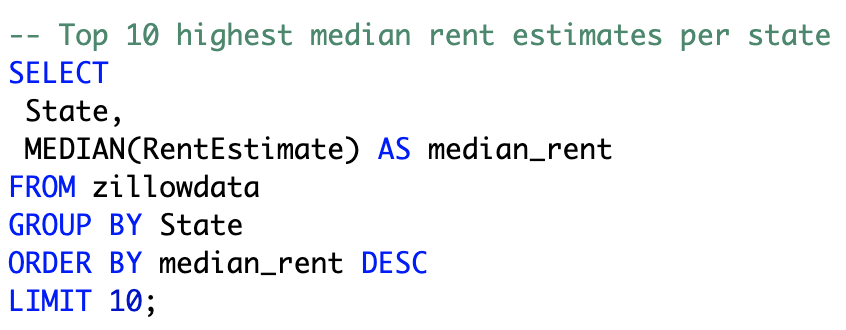

Backstory
Whoa. Is this house really worth that much?
This is my reaction whenever I see the eye-watering sum that's being asked for on average for a
house in the Bay Area.
Living in the Bay Area, housing prices have always been a huge area of discussion here.
I was curious to confirm with numbers and see just how California compares to other states
when it comes to housing prices.
It's also interesting to see how marketplaces like Zillow value a home, and to see how well those estimates
reflect the real listed price.
The Data
The dataset we are looking at contains about 20,000 homes and has information such as its listed price,
its Zillow-estimated rent, its Zillow-estimated value, and its price per square foot.
In all, we have a total of 14 columns:
State, City, Street, Zipcode, Bedroom, Bathroom, Area, PPSq, LotArea, MarketEstimate, RentEstimate,
Latitude, Longitude, and ListedPrice.
Key Questions
My analysis will answer these questions:
- Which states are the most expensive to rent in?
- Which states are the most expensive to purchase a home in?
- Given the choice between renting and owning, which states are the best and worst to rent in?
- Which states (according to Zillow) have the most over-valued homes? And the most under-valued?
I will use SQL and Tableau to help me answer them.
Data Overview
First, we'll take a look at the dataset. We'll write a query that gives us a count of all rows,
so we'll see how large of a dataset we're dealing with.
So we see that our total number of rows is 21,840, and each state has about 400-500 entries.
Highest Rents, Home Prices, and Prices Per SqFt
Next, we'll write a query that tells us the top 10 states with the highest median rents.
Then we'll do the same for the top estimated home prices and also for prices per square foot.
Side note: you will see me use the MEDIAN funtion below. Many versions of SQL (for example, SQL Server)
don't have a built-in MEDIAN function. In those cases, we can simply use
PERCENTILE_CONT, passing in 0.5 as our input value.

Here, we see that CA holds the top spot and MA is either 2nd or
3rd place in all three categories.
CO, RI are in the top 10 for all three categories as well.
Renting vs. Owning
Taking a look at my earlier question,
'Given the choice between renting and owning, which states are the best and worst to rent in?' ,
I wrote this query.
In order to answer this question, I decided to use the ratio between a state's median estimated rent
and its median estimated home price. (For example, if State A's rent:owning ratio is 1% and State B's ratio is 2%,
I would conclude that renting is a better deal in State A than it is in State B.)
I used a CTE to create a new column for this ratio value.
I used a CTE to create a new column for this ratio value.
Here, we see that the highest rent ratio in the U.S. is 0.98% in MS. Interestingly,
CA has the lowest ratio of 0.44% - so as expensive as rents are in CA, it's still much, much more expensive to buy a home there.
Valuation: Over vs. Under
Next, I wanted to answer the question of 'Which states (according to Zillow) have the
most over- and the most under-valued homes?'
In order to do this, I used a CTE to create a new column called 'overvalue_difference', which is simply
the difference of ListedPrice minus the MarketEstimate.
Here, we see the top 10 states with overvalued homes and the bottom 10 with undervalued homes.
Interestingly, Zillow thinks that CA homes are quite undervalued.
Tableau Dashboard
Our dashboard , which is embedded below, shows 4 key metrics:
Rent Vs. Price, Price Per Sq Ft, Median Rent, and Median Price.

In our two bar charts, the bar heights represent the median values and the bar
colors (shades) represent the average values. In many cases, there was a noticeable difference between the two,
and it was interesting to see them displayed here (for example, we can see that in NV,
the average rent is much higher than the median rent, and the average price is also much higher than the median price.)
In our Price Per Sq Ft map, we see that CA and MA are among the most expensive (darkest) states.
In our scatter plot, we see that CA leads the country in both rents and home prices. We also
see the general trend that rents are associated with home prices (as one rises, so does the other.)
Conclusion
I was not at all surprised to see CA topping pretty much every list when it comes to high cost.
I also was not suprised to see like MA and CO being expensive as well (though I didn't think
MA would be that expensive).
However, I did think states like NY and TX would be ranked much higher up.
A lot of our top 10 states also make an appearance in
this
Zillow article on the largest housing markets in the U.S. (though the aggregation they used here was the
sum, not the median, of each state's housing market. This would favor the highly
populous states like CA, TX, NY, and FL, so there were also some differences here too.)